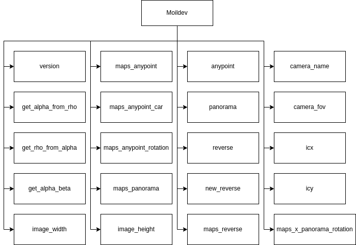

API Reference
Moilutils package
Moilutils is a package that containing several modules that has utilization functions for helping to simplify the process of developing apps. bellow is the function name:

- select_type_camera(theme='dark')[source]
Generate a dialog for camera selection and return the name of the camera selected.
- Parameters:
theme – dark mode
- Returns:
camera name
- select_source_camera()[source]
Generate a dialog for usb/web camera source selection and detection. You can get available camera sources using the detection button on the dialog.
- Returns:
Port number for usb cameras or the source link for web cameras
- show_image_to_label(label, image, width, angle=0, plusIcon=False, scale_content=False)[source]
Display an image to the label widget on the user interface.
- Parameters:
label – destination label
image – image to show
width – width for resizing the image while keeps the original aspect ratio
angle – rotation angle for the image
plusIcon – whether to show a plus icon at the center of the image
scale_content – whether to make the image displayed follow the label size
- Returns:
None. Shows image on the label.
Example:
MoilUtils.showImageToLabel(label, image, 400, angle=0, plusIcon=False, scale_content=False)
- connect_to_moildev(type_camera, camera_parameter=None, parent=None)[source]
Return a Moildev instance for a specific type of camera.
- Parameters:
type_camera – name of camera (You can use ‘select_type_camera()’ to get the name.)
camera_parameter – parameter of the camera
parent – None
- Returns:
Moildev instance
c_type = mutils.select_type_camera() moildev_camera1 = mutils.connect_to_moildev(type_camera=c_type)
- check_usb_camera_available()[source]
Detect the USB camera port available for image/video capture.
- Returns:
A list of indices of available camera source.
- read_image(image_path)[source]
Load an image from the specified file path (use the cv2.imread function). If the image cannot be read (because of missing file, improper permissions, unsupported or invalid format)， this method raises an error.
- Parameters:
image_path – image file path
- Returns:
loaded image in numpy ndarray format
- Return type:
Image
Example:
image = read_image('image_path')
- remap_image(image, map_x, map_y)[source]
- Take an image and a pair of X-Y maps generated by a Moildev instance as inputs,
then return a remapped image using the maps.
- Parameters:
image – input image
map_x – mapping function in the x direction.
map_y – mapping function in the y direction.
- Returns:
remapped image, typically it would be an anypoint image or a panorama image.
- Return type:
image
Example:
image_anypoint = remap_image(image, mapX_anypoint, mapY_anypoint)
- select_file(parent=None, title='Open file', dir_path='.', file_filter='')[source]
Generate a dialog for file selection and return the path of the file selected. If no file is selected, an empty string is returned.
- Parameters:
parent – parent windows of the dialog
title – dialog title
file_filter – filters for specific file types
dir_path – dialog’s working directory
- Returns:
path of the file selected.
Example:
path_img = mutils.select_file(dir_path="./", file_filter='*.jpg')
- select_directory(parent=None, title='Select Folder')[source]
Generate a dialog for directory selection and return the path of the directory selected. If no directory is selected, an empty string is returned.
- Returns:
path of the directory selected
Example:
path_dir = mutils.select_file()
- copy_directory(src_directory, dst_directory)[source]
Recursively copy a whole directory to the destination directory.
- Parameters:
src_directory – path of the source folder
dst_directory – path of the destination directory
- Returns:
None
Example:
path_source = mutils.select_directory() mutils.copy_directory(path_source, '/home')
- resize_image(image, width)[source]
Resize an image to one with a given width while maintaining its original aspect ratio and return it.
- Parameters:
image – input image
width – desired image width
- Returns:
resized image
- rotate_image(src, angle, center=None, scale=1.0)[source]
Return an image after rotation and scaling(not resizing). :param src: input image :param angle: rotation angle :param center: coordinate of the rotation center. By default, it’s the image center. :param scale: scaling factor
- Returns:
rotated image
Example:
image = mutils.rotate_image(image, 90, center=(20,25))
- calculate_height(image, width)[source]
Return the aspect ratio keeping height for a given image width
- Parameters:
image – input image
width – desired image width
- Returns:
image height
Example:
height = calculate_height(image, 140)
- draw_polygon(image, mapX, mapY)[source]
Return image with a drawn polygon indicating the remapped area given an anypoint map pair.
- Parameters:
image – input image
mapX – anypoint mapX
mapY – anypoint mapY
- Returns:
image with a polygon
Example:
img = mutils.read_image('sample_image.jpg') c_type = mutils.select_type_camera() m_instance = mutils.connect_to_moildev(type_camera=c_type) mx, my = m_instance.maps_anypoint(0, -90, 4) img = mutils.draw_polygon(img, mx, my)
- write_camera_type(image_file, type_camera)[source]
Write the camera type into the image’s metadata.
- Parameters:
image_file – image file path
type_camera – name of camera
- Returns:
None
mutils.write_camera_type('sample_image.jpg', 'Camera_name')
- read_camera_type(image_file)[source]
Read the camera type from image’s metadata.
- Parameters:
image_file – image file path
- Returns:
camera type
c_type = mutils.read_camera_type('sample_image.jpg')
- draw_point(image, coordinate_point, radius=5)[source]
Draw a point in the image and return it.
- Parameters:
image – input image
() (coordinate_point) – point coordinate (x, y)
radius – size of the point (scale by radius)
- Returns:
image with points drawn
img = mutils.read_image('sample_image.jpg') img = mutils.draw_point(img, (400, 400), 6)
- save_image(image, dst_directory, type_camera=None)[source]
Save an image to a directory and write the camera type into its metadata if the type is given. The file name would be the date and time when the image is saved.
- Parameters:
image – input image
dst_directory – destination directory path
type_camera – camera type
- Returns:
file name
save_image(img, '.', 'camera_1')
- draw_line(image, coordinatePoint_1=None, coordinatePoint_2=None)[source]
Draw a line on the image from the coordinate given. If no coordinate is given, it draws lines on image margins.
- Parameters:
image – input image
coordinatePoint_1 – point 1 coordinate (x, y)
coordinatePoint_2 – point 2 coordinate (x, y)
- Returns:
image with a line drawn
img = mutils.draw_line(img, (300, 300), (300, 400) )
- calculate_ratio_image2label(label, image)[source]
Calculate the width and height ratio of the image to a label.
- Parameters:
label – UI label
image – input image
- Returns:
width ratio and height ratio
w_ratio, h_ratio = mutils.calculate_ratio_image2label(label, img)
- cropping_image(image, right, bottom, left, top)[source]
Crop an image by ratio from every side.
- Parameters:
image – input image
right – ratio of right side (1-0)
bottom – ratio of bottom side (1-0)
left – ratio of left side (0-1)
top – ratio of top side (0-1)
- Returns:
image has already cropping
- draw_list_point_with_text(image, coordinate_point, radius=5)[source]
Draw points and their indices on the image.
- Parameters:
image – input image
coordinate_point – a list of points’ coordinates
radius – point radius
- Returns:
image with the point and their sequences drawn.
points_to_draw = [(100, 250), (200, 200), (450, 0)] img = mutils.draw_list_point_with_text(img, points_to_draw, radius=3)
Moildev package
Moildev Library is a collection of functions to developments fisheye image applications. Initially, this library is written for C++ programing language. In the recent decade, python is a programming language that is very popular for developers. That is the reason why we are developing the Moildev library for python.
{kind=link}
- class Moildev(file_camera_parameter=None, camera_type=None, **kwarg)[source]
Bases:
objectThis is the initial configuration that you need to provide the camera parameter. The camera parameter is the result from calibration camera by MOIL laboratory. Before the successive functions can work correctly, configuration is necessary in the beginning of program.
- Parameters:
file_camera_parameter – *.json file
camera_type – the name of the camera type used (use if you pass the parameter using *.json file)
cameraName – the name of the camera used
cameraFov – camera field of view (FOV)
sensor_width – size of sensor width
sensor_height – size of sensor height
Icx – center image in x-axis
Icy – center image in y-axis
ratio – the value of the ratio image
imageWidth – the size of width image
imageHeight – the size of height image
calibrationRatio – the value of calibration ratio
parameter5 (parameter0 ..) – intrinsic fisheye camera parameter get from calibration
for more detail, please reference https://github.com/MoilOrg/moildev
- classmethod version()[source]
Showing the version of the library and the new feature updated.
- Returns:
Moildev version
- icx()[source]
This function is for get center image from width image.
- Returns:
Image center X (int)
- icy()[source]
This function is for get center image from height image.
- Returns:
Image center Y(int)
- image_width()[source]
This function is for get the size width of the image.
- Returns:
image width(int)
- image_height()[source]
This function is for get the size height of the image.
- Returns:
image height(int)
- maps_anypoint(alpha, beta, zoom, mode=1)[source]
The purpose is to generate a pair of X-Y Maps for the specified alpha, beta and zoom parameters, the result X-Y Maps can be used later to remap the original fisheye image to the target angle image.
- Parameters:
alpha – value of zenith distance(float).
beta – value of azimuthal distance based on cartography system(float)
zoom – value of zoom(float)
mode – selection anypoint mode(1 or 2)
- Returns:
the mapping matrices X mapY: the mapping matrices Y
- Return type:
mapX
please reference: https://github.com/MoilOrg/moildev
- maps_anypoint_car(pitch, yaw, roll, zoom)[source]
To generate a pair of X-Y Maps from anypoint mode 2 plus extension roll rotation for the result image.
- Parameters:
pitch – pitch rotation (from -90 to 90 degree)
yaw – yaw rotation (from -90 to 90 degree)
roll – roll rotation (from -90 to 90 degree)
zoom – zoom scale (1 - 20)
Returns:
- maps_panorama(alpha_min, alpha_max)[source]
To generate a pair of X-Y Maps for alpha within 0 … alpha_max degree, the result X-Y Maps can be used later to generate a panorama image from the original fisheye image.
- Parameters:
alpha_min – the minimum alpha degree given
alpha_max – the maximum alpha degree given. The recommended value is half of camera FOV. For example, use 90 for a 180 degree fisheye images and use 110 for a 220 degree fisheye images.
- Returns:
the mapping matrices X mapY: the mapping matrices Y
- Return type:
mapX
please reference: https://github.com/MoilOrg/moildev
- maps_panorama_rotation(alpha_max, iC_alpha_degree, iC_beta_degree)[source]
To generate a pair of X-Y Maps for alpha within 0..alpha_max degree, the result X-Y Maps can be used later to generate a panorama image from the original fisheye image. The panorama image centered at the 3D direction with alpha = iC_alpha_degree and beta = iC_beta_degree.
- Parameters:
alpha_max – max of alpha. The recommended value is half of camera FOV. For example, use 90 for a 180 degree fisheye images and use 110 for a 220 degree fisheye images.
iC_alpha_degree – alpha angle of panorama center.
iC_beta_degree – beta angle of panorama center.
- Returns:
New mapX and mapY.
please reference: https://github.com/MoilOrg/moildev
- maps_x_panorama_rotation(alpha_max, iC_alpha_degree, iC_beta_degree, p_alpha_from, p_alpha_end)[source]
To generate a pair of X-Y Maps for alpha within 0 alpha_max degree, the result X-Y Maps can be used later to generate a panorama image from the original fisheye image. The panorama image centered at the 3D direction with alpha = iC_alpha_degree and beta = iC_beta_degree.
- Parameters:
alpha_max – max of alpha. The recommended value is half of camera FOV. For example, use 90 for a 180 degree fisheye images and use 110 for a 220 degree fisheye images.
iC_alpha_degree – alpha angle of panorama center.
iC_beta_degree – beta angle of panorama center.
p_alpha_end –
p_alpha_from –
- Returns:
New mapX and mapY.
please reference: https://github.com/MoilOrg/moildev
- maps_reverse(alpha_max, iC_beta_degree)[source]
Create maps for reverse image. this can work using input panorama rotation image
- Parameters:
alpha_max – max of alpha. The recommended value is half of camera FOV. For example, use 90 for a 180 degree fisheye images and use 110 for a 220 degree fisheye images.
iC_beta_degree – beta angle of panorama center.
- Returns:
maps_x_reverse, maps_y_reverse
- anypoint(image, alpha, beta, zoom, mode=1)[source]
Generate anypoint view image. for mode 1, the result rotation is betaOffset degree rotation around the Z-axis(roll) after alphaOffset degree rotation around the X-axis(pitch). for mode 2, The result rotation is thetaY degree rotation around the Y-axis(yaw) after thetaX degree rotation around the X-axis(pitch).
- Parameters:
image – source image given
alpha – the alpha offset that corespondent to the pitch rotation
beta – the beta offset that corespondent to the yaw rotation
zoom – decimal zoom factor, normally 1..12
mode – the mode view selected
- Returns:
anypoint image
please reference: https://github.com/MoilOrg/moildev
- panorama(image, alpha_min, alpha_max)[source]
The panorama image centered at the 3D direction with alpha = iC_alpha_degree and beta = iC_beta_degree.
- Parameters:
image – image source given
alpha_min –
alpha_max –
- Returns:
Panorama view image
please reference: https://github.com/MoilOrg/moildev
- reverse(image, alpha_max, iC_alpha_degree, iC_beta_degree)[source]
To generate the image reverse image from panorama that can change the focus direction from the original images. The panorama reverse image centered at the 3D direction with alpha_max = max of alpha and beta = iC_beta_degree.
- Parameters:
image – input image
alpha_max – max of alpha. The recommended value is half of camera FOV. For example, use 90 for a 180 degree fisheye images and use 110 for a 220 degree fisheye images.
iC_alpha_degree – alpha angle of panorama center
iC_beta_degree – beta angle of panorama center
- Returns:
reverse image
please reference: https://github.com/MoilOrg/moildev
- new_reverse(image, alpha_max, iC_alpha_degree, iC_beta_degree)[source]
New function for change the optical point of fisheye image. using this function, it will improve the speed of the computation processing more than 30%
- Parameters:
image – input image
alpha_max – max of alpha. The recommended value is half of camera FOV. For example, use 90 for a 180 degree fisheye images and use 110 for a 220 degree fisheye images.
iC_alpha_degree – alpha angle of panorama center
iC_beta_degree – beta angle of panorama center
- Returns:
reverse image
- get_alpha_from_rho(rho)[source]
Get the alpha from rho image.
- Parameters:
rho – the value of rho given
- Returns:
alpha